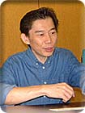

|
|
−−モバイルでカウンセリングを受けられるのもいいですね。
秀 ひとつだけ、ホームページを見ているかたがたにお願いがあるのですが。カウンセリングのリクエストなんですが、デフォルトで申しこむと「コース１のホール１」なんですよ。みんな、そこでボタンを押してしまうらしくて、リクエストの順位はコース１ホール１が一番多いんです（笑）。実際にカウンセリングの内容も僕が作って送っているんですが、「コース１のホール１」は「のびのびやろう」ということくらいしかカウンセリングすることはないので（笑）、リクエストを送るときはよく確かめて、ちゃんと自分の苦手なホールをリクエストしてください。
宏 それぞれのホールに対しては、「こういう風に攻略すればいい」というルートを、ものすごくシビアに作っているんですよ。ホールの攻略方法を知ると、そのあとのゲームが楽しくなると思います。むちゃなコースに見えても、僕らは「こうやって攻めればこのホールは攻めきれる」という設定のもとに作っているんです。後半のコースは難しいから、自分では無理だと思っている人もいるかもしれませんが、そういう人たちに、ぜひカウンセリングでコースの攻略方法を見てもらいたいんです。ゴルフってどうしてもスコアと戦っちゃうんですけど、実はホールの設計思想と戦うものなんですよ。それはピート・ダイっていう人に習ったんですけどね。僕ら、コースの設計の仕方をその人に習いに行ったんです。
−−え？ そうなんですか！ それはスゴいですね。
秀 世界三大設計家といわれるうちの１人ですね。
宏 なぜピート・ダイなのかというと、悪魔の設計家といわれていて、僕らから見るとコースがとってもゲーム的なんです。ＴＰＣソーグラスというコースが一番有名なんですけど、一番難しいとされているコースなんです。マスターズに使われているオーガスタとかいうのは、「この方向から攻めないと攻めきれない」という方向で難しくなっているだけで、本当のスクラッチプレイヤー（ハンディキャップがゼロのプレイヤー）が普通の状態でプレイすると全然難しくないんですよ。それだと、極論を言うと、たとえば完全に止まるボールを打てるという技術をゲームプレイヤーが身につけちゃうと、全然難しいコースじゃなくなっちゃうんです。
ところが、ピート・ダイみたいな設計の仕方だと、グリーンから攻略を考えて、ティーショットをどこに打つかを決めなきゃいけない。非常にコンピュータゲーム的なコースの設計思想をもっているんですね。僕らがコンピュータでゴルフゲームを作るんだったら、普段は100以上叩くようなプレイヤーでも、ゲームのコントローラーを握ればスクラッチプレイヤーとして回れるというゲームにしたいというコンセプトがあったんです。そういった理由で、ピート・ダイという人に習いに行ったんです。自分がマックス280ヤード飛ばせてても、このホールは250ヤードに止めておいてこのルートを使うんだとか。そういうことを知っておいてプレイするのと、「オレが打つ場所ないじゃん」と思ってプレイするのでは、全然違うじゃないですか。そういう面で、カウンセリングがきっと活かせるんじゃないかと思うんですよね。
−−じゃあ、カウンセリングを見てパッと目からウロコが落ちるという場合もあるんですね。
宏 そうだと思うんです。「このホールはパーでいいという気持ちで攻めなさい」とか、「こういう風が吹いていたらこのホールを攻めるのはかなり無理があるよ」とか。だから、ぜひカウンセリングを利用してほしいですね。
|
|
|
|
|